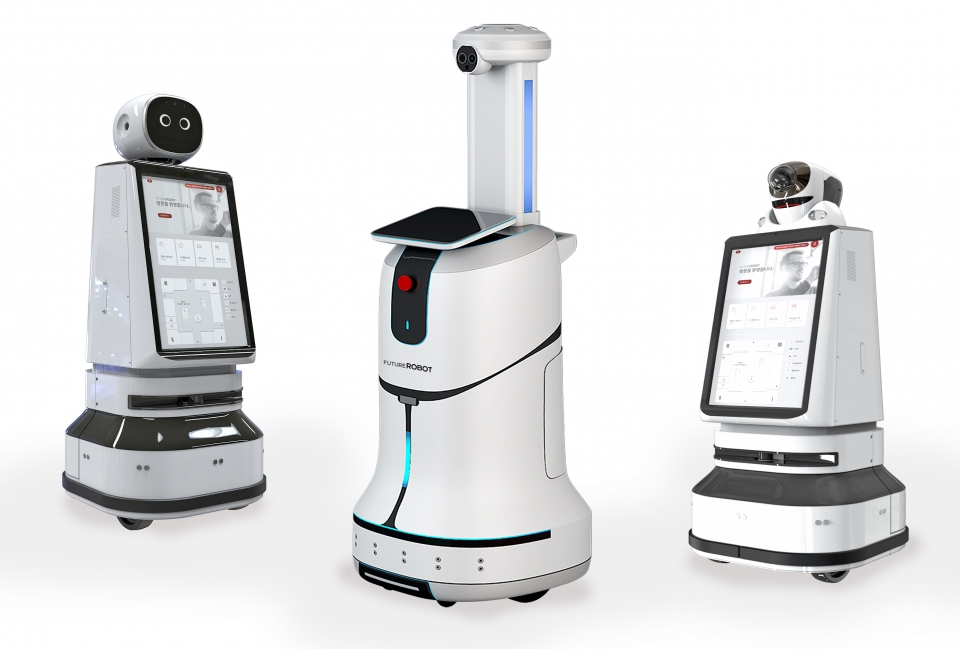
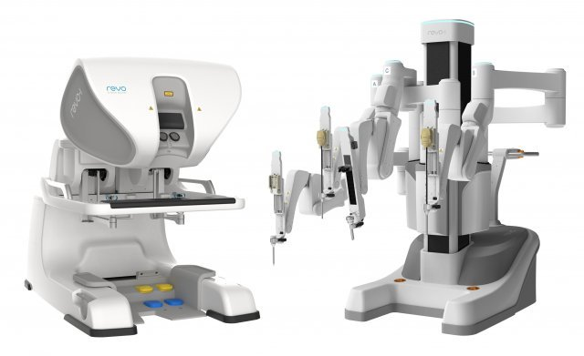

로봇과 함께하는 일상: 기술이 만든 변화의 순간들 |
||
"자율 주행 차량" |
||
| 자율 주행 차량은 차량이 스스로 주변 환경을 인식하고, 주행 경로를 결정하며, 운전자의 개입 없이 운행을 할 수 있는 기술을 탑재한 차량이다. 자율 주행의 핵심 기술에는 인공지능(AI), 컴퓨터 비전, 레이더와 라이다(LiDAR), GPS, 그리고 V2X 통신(Vehicle to Everything) 기술이 포함된다. 이 기술들은 차량이 실시간으로 주변 환경을 감지하고, 위험 요소를 피하거나 최적의 경로를 선택하는 데 도움을 준다. | 대한민국의 대표적인 자동차 기업인 현대자동차는 자율 주행 기술에서 선도적인 역할을 하고 있다. 특히 2024년에 출시된 아이오닉 6는 자율 주행 레벨 3 기술을 적용한 차량으로 주목받고 있다. 이 차량은 고속도로 주행 시 운전자의 개입 없이 차선 유지, 속도 조절, 차선 변경 등을 스스로 처리할 수 있다. 현대자동차는 AI 기반의 운전 패턴 학습 기술과 첨단 센서 시스템을 통해 자율 주행의 안전성과 효율성을 높이고 있다. | 자율 주행 차량의 가장 큰 효과는 안전성이다. 인간의 실수로 인한 교통사고를 크게 줄일 수 있으며, 졸음 운전이나 음주 운전 같은 위험한 상황도 예방할 수 있다. 또한, 자율 주행은 교통 흐름을 원활하게 하여 교통 체증을 줄이고, 연료 효율성을 향상시킨다. 이와 함께 자율 주행 차량은 노인, 장애인 등 이동이 제한된 사람들에게도 이동의 자유를 제공할 수 있다. |
| 레이더와 라이다: 차량 주변의 장애물을 감지하는 데 중요한 역할을 한다. 레이더는 주로 속도와 거리 감지를 담당하며, 라이다는 정밀한 3D 맵을 생성해 정확한 위치 파악을 가능하게 한다. V2X 통신: 다른 차량, 도로 인프라, 보행자와의 통신을 통해 도로 상황에 대한 정보를 교환하고, 위험 상황에서 경고를 주거나 도로 혼잡을 미리 방지한다. | ||
"서비스 로봇" |
||
| 서비스 로봇은 인간의 특정한 요구를 충족시키기 위해 설계된 로봇으로, AI 기반 상호작용 기술과 자율 이동 능력을 갖춘 것이 특징이다. 이 로봇들은 주로 음성 인식, 이미지 처리, 모션 감지 등의 기술을 통해 사람과의 자연스러운 소통을 가능하게 하며, 자율주행 시스템을 사용해 환경을 스스로 탐색하고 이동한다. 자율 이동: 로봇이 미리 프로그래밍된 경로를 따르지 않고 실시간으로 장애물을 피하고 목적지로 이동할 수 있는 기술이다. 주로 센서와 비전 시스템을 사용해 실시간 경로 계획을 세운다. |
 |
서비스 로봇은 서비스 산업의 효율성을 크게 향상시킨다. 호텔, 병원, 레스토랑 등 다양한 분야에서 인건비를 절감하고, 정확하고 빠른 서비스를 제공할 수 있게 한다. 또한, 반복적이고 지루한 작업을 대신 수행함으로써 인간 노동자의 작업 피로를 줄이고, 생산성을 높이는 데 기여한다. |
"의료 로봇" |
||
| 의료 로봇은 정밀한 수술을 지원하거나 재활 치료를 돕는 역할을 하는 로봇이다. 로봇 보조 수술 시스템은 외과 의사의 조작을 통해 작은 절개로 복잡한 수술을 가능하게 하며, AI 기반 분석은 진단 정확도를 높인다. 이러한 로봇들은 고해상도 3D 카메라, 미세한 로봇 팔, 그리고 실시간 데이터 분석 기능을 통해 의료진이 더 정밀한 시술을 할 수 있게 도와준다. 정밀 수술 기술: 로봇 팔은 사람 손보다 훨씬 작은 범위에서 더 정교한 동작을 할 수 있다. 이로 인해 수술 부위의 출혈을 줄이고, 수술 후 회복 시간을 단축시킬 수 있다. |
 |
의료 로봇은 환자의 회복 시간을 단축시키고, 수술 성공률을 높이는 데 기여한다. 로봇이 수술을 보조함으로써 의료진의 피로도를 줄이고, 더 많은 수술을 효율적으로 처리할 수 있게 한다. 또한, 정밀한 동작이 가능해 복잡한 수술에서도 성공률이 높아지고, 환자의 합병증 발생률을 줄일 수 있다. 재활 분야에서도 로봇은 환자에게 맞춤형 운동 프로그램을 제공하여 회복 과정을 효율적으로 지원한다. |
| 로봇 기술은 인간의 생활을 더욱 풍요롭게 하고 있다. 자율성과 지능을 갖춘 로봇은 앞으로도 다양한 분야에서 큰 변화를 가져올 것이다. 로봇이 만들어갈 새로운 시대를 기대하며, 그 발전을 함께 주목해야 한다. | ||